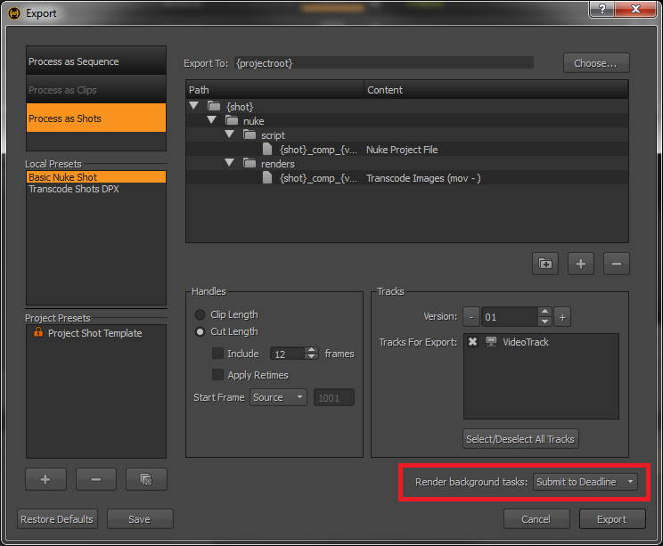
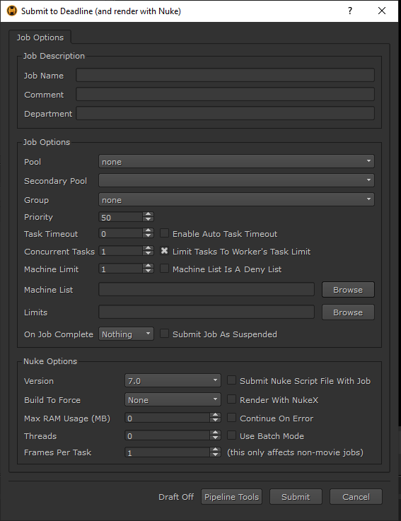

Hiero¶
Job Submission¶
You can submit transcoding jobs to Nuke from within Hiero by installing the integrated submission script. The instructions for installing the integrated submission script can be found further down this page.
To submit from within Hiero, open the Export window from the File menu, or by right-clicking on a sequence. Then choose the Submit To Deadline option in the Render Background Tasks drop down and press Export.
This will bring up the submission window. Note that the submission window is only shown once, and all jobs that are submitted will use the same job settings.
Submission Options¶
The general Deadline options are explained in the Job Submission documentation, and the Draft options are explained in the Draft and Integration documentation. The Nuke specific options are:
Render With NukeX: Enable this option if you want to render with NukeX instead of Nuke.
Render Threads: The number of threads to use for rendering.
Continue On Error: If enabled, Nuke will attempt to keep rendering if an error occurs.
Maximum RAM Usage: The maximum RAM usage (in MB) to be used for rendering.
Use Batch Mode: If enabled, Deadline will keep the Nuke file loaded in memory between tasks.
Build To Force: Force 32 or 64 bit rendering.
Pipeline Tools¶
When using the integrated submitter to submit through Hiero you have the ability to use any of the event plugins that you have enabled through the Deadline Monitor. This is done by opening the Pipeline Tools window via the Pipeline Tools button. This window is explained further in the Pipeline Tools documentation.
Cross-Platform Rendering Considerations¶
The Hiero submitter submits jobs to the Nuke plugin. See the Nuke Plugin Guide for cross-platform rendering considerations.
Plugin Configuration¶
The Hiero submitter submits jobs to the Nuke plugin. See the Nuke Plugin Guide for information on configuring the Nuke plugin.
Integrated Submission Script Setup¶
The following procedures describe how to install the integrated Hiero submission script. This script allows for submitting Hiero transcoding jobs to Deadline directly from within the Hiero editing GUI. These jobs are then rendered using the Nuke plugin.
You can either run the Submitter installer or manually install the submission script.
Submitter Installer¶
Run the Submitter Installer located at
<Repository>/submission/Hiero/Installers.
Manual Installation¶
For Hiero 1.9 and earlier:
Go to your .hiero user folder
~/.hiero or %USERPROFILE%\.hieroand create a folder called “Python” if it doesn’t exist.Open the “Python” folder and create another folder called “Startup” if it doesn’t exist.
Copy the file:
[Repository]\submission\Hiero\Client\DeadlineHieroClient.py to the "Startup" folder (~/.hiero/Python/Startup or %USERPROFILE%\.hiero\Python\Startup).
For Hiero 9 and later:
Go to your .nuke user folder
~/.nuke or %USERPROFILE%\.nukeand create a folder called “Python” if it doesn’t exist.Open the “Python” folder and create another folder called “Startup” if it doesn’t exist.
Copy the file:
[Repository]\submission\Hiero\Client\DeadlineHieroClient.py to the "Startup" folder (~/.nuke/Python/Startup or %USERPROFILE%\.nuke\Python\Startup).
The next time you launch Hiero, there should be a Submit To Deadline option in the Hiero Export window, in the Render Background Tasks drop down.
FAQ¶
The Hiero submitter submits jobs to the Nuke plugin. See the Nuke Plugin Guide for additional FAQs related to Nuke.
Which versions of Hiero are supported?
Hiero 1.0 to 15.0 are supported.
How does the Deadline submission script for Hiero work?
The submission script submits transcoding jobs from Hiero to Deadline, which are rendered with the Nuke plugin.
How does Pipeline Tools interact with Hiero?
Due to Hiero’s multi scene file approach, Pipeline Tools only supports saving settings at the machine-level, instead of the application level.
Error Messages and Meanings¶
The Hiero submitter submits jobs to the Nuke plugin. See the Nuke Plugin Guide for Nuke error messages and meanings.

{kind=link}
{kind=link}